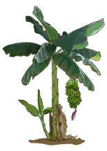
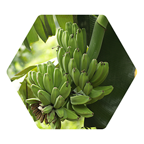

Crear una granja orgánica que promueva la abundancia, la salud, la nutrición, la educación, la inclusión
y las relaciones justas y equitativas entre el medio ambiente y nuestra comunidad.


Nuestra Misión
Producir vegetales, frutas, hierbas y otros productos orgánicos de grado orgánico de una manera sostenible
que honre el medio ambiente y nuestra comunidad.